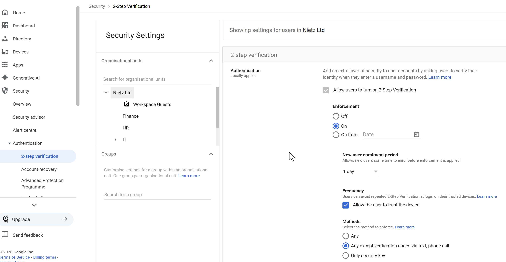
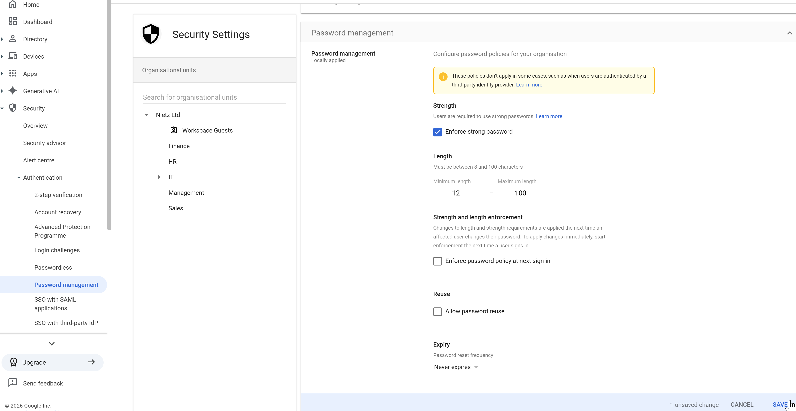

Google Workspace 06: Security and Authentication
2-Step Verification and authentication/security controls.
06. Security & Authentication
Implemented core Google Workspace identity and access security controls, including 2-Step Verification.
The objective is to strengthen account security, reduce unauthorised access risk, and align with modern authentication best practices.
2-Step Verification (2SV)
2-Step Verification was enabled and enforced to provide an additional authentication layer.

Configuration includes:
Enforcement: Enabled
Methods: Any except SMS/phone where possible
Trusted devices: Allowed
Enrolment period: 1 day
This configuration:
Protects against credential theft and phishing
Reduces reliance on passwords alone
Balances security with usability
Password Policy
A secure password policy was configured to enforce strong credential standards.

Configuration includes:
Minimum length: 12 characters
Strong password enforcement: Enabled
Password reuse: Disabled
Password expiry: Disabled
Enforce at next sign-in: Disabled
This configuration:
Improves resistance to brute-force attacks
Prevents reuse of compromised passwords
Avoids outdated practices such as forced expiry
Minimises disruption while maintaining strong security
Summary
Evidence covered:
Implementation of modern authentication controls
Enforcement of strong credential policies
Consideration of usability alongside security
Application of industry best practices
These controls provide a strong foundation for securing user accounts within Google Workspace.